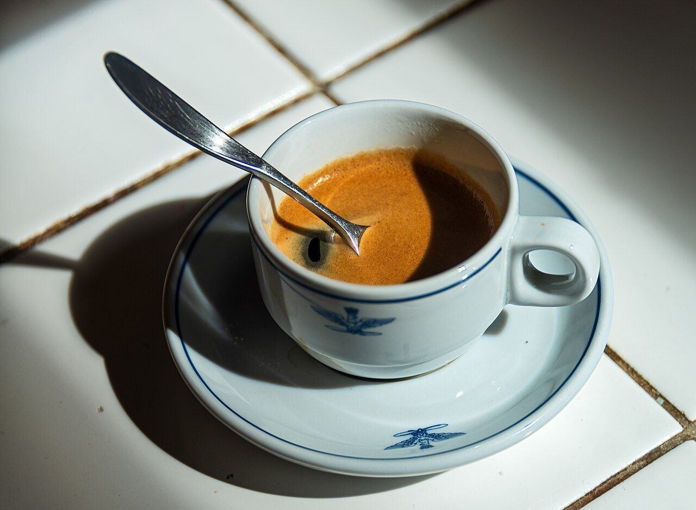

SAMPLE制作側が作成した試作ページです。店舗の公式サイトではありません。
掲載写真はフリー素材のイメージで、店舗の実際の様子ではありません。他地域で撮影されたものや、撮影地が不明なものを含みます。
ACCESS
アクセス
- 住所
- 〒826-0023 福岡県田川市上本町7-1
- 電話
- 0947-23-0180
- 営業時間
- 準備中(お問い合わせください)
- 定休日
- 準備中(お問い合わせください)
道順や周辺の詳細は、お電話でご確認ください。

SAMPLE制作側が作成した試作ページです。店舗の公式サイトではありません。
掲載写真はフリー素材のイメージで、店舗の実際の様子ではありません。他地域で撮影されたものや、撮影地が不明なものを含みます。
ACCESS
道順や周辺の詳細は、お電話でご確認ください。
